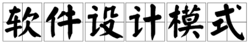

设计模式与面向对象
1. 设计模式
设计模式是对软件设计中普遍存在或反复出向的各种问题所提出的解决方案。每一个设计模式系统地被命名、解释和评价了面向对象系统中一个重要和重复出现的设计。
2. 设计模式的分类
创建型模式：工厂方法模式、抽象工厂模式、创建者模式、原型模式、单例模式。隐藏底层模块的逻辑，关注怎么创建对象。
结构型模式：适配器模式、桥模式、组合模式、装饰模式、外观模式、享元模式、代理模式。类之间如何协同工作，应该组成什么结构。
行为型模式：解释器模式、责任链模式、命令模式、迭代器模式、中介者模式、备忘录模式、观察者模式、状态模式、策略模式、访问者模式、模板方法模式。关注行为，也就是方法，应该怎样某些行为。
3. 面向对象
设计模式解决的就是面向对象中的问题。需要指导面向对象的三大特性是封装、继承和多态 ，封装是把数据和方法封装到类中，继承是类之间复用代码，多态在Python中默认支持的，Python是一种多态的语言。
4. 接口
接口是若干抽象方法的集合。接口的作用是限制实现接口的类必须按照接口给定的调用方式实现这些方法，对高层模块隐藏了类的内部实现。下面通过一个简单的例子来加强对接口的理解：
from abc import ABCMeta, abstractmethod
# 具有抽象方法的类就是接口类，
class Payment(metaclass=ABCMeta):
@abstractmethod
def pay(self, money):
"""
抽象方法，在实现的类中必须实现的方法。限制实现接口的类必须按照接口给定的调用方式实现这些方法
:param money:
:return:
"""
pass
# 不能说是继承接口类，应该说是实现接口
class Alipay(Payment):
def pay(self, money):
"""
实现接口类中的必须实现的方法
:param money:
:return:
"""
print("支付宝支付了{0}元!".format(money))
class WechatPay(Payment):
def pay(self, money):
"""
实现接口类中的必须实现的方法
:param money:
:return:
"""
print("微信支付了%d元!" % (money))
# 下面是高层代码，在调用的时候是看不到底层类的内部实现
a = Alipay()
w = WechatPay()
a.pay(100)
w.pay(100)
面向对象设计原则
1. 开放封闭原则
一个软件实体如类、模块和函数应该对扩展开放，对修改关闭。即软件实体应该在不修改原代码的情况下进行修改。
2. 里氏替换原则
所有引用父类的地方必须能透明地使用其子类地方必须能透明地使用其子类的对象，一个简单的例子加强理解
class User(object):
def print_name(self):
pass
class VipUser(User):
def print_name(self):
"""
保证参数和返回值类型需要和父类一样
:return:
"""
pass
def print_name(u):
"""
不论使用User还是继承User的VipUser，调用的方式是一样的。这就要求User和VipUser的方法参数和返回值类型是一样的
:param u:
:return:
"""
u.print_name()
3. 依赖倒置原则
高层模块不应该依赖底层模块，二者都应该依赖抽象。抽象不应该依赖细节，细节应该应该依赖抽象。要针对接口编程，而不是针对实现变成。通过例子加强理解：
from abc import ABCMeta, abstractmethod
# 接口，抽象不应该依赖细节
class Payment(metaclass=ABCMeta):
@abstractmethod
def pay(self, money):
pass
# 底层代码和高层代码都是细节，细节应该依赖抽象
# 底层代码
class Alipay(Payment):
def pay(self, money):
print("支付宝支付了{0}元!".format(money))
class WechatPay(Payment):
def pay(self, money):
print("微信支付了%d元!" % (money))
# 高层代码，高层模块不应该依赖底层模块，二者都应该依赖抽象
a = Alipay()
w = WechatPay()
a.pay(100)
w.pay(100)
4. 接口隔离原则
使用多个专门的接口，而不使用单一的总结口，高层的代码不应该依赖那些它不需要的接口。通过例子加强理解：
from abc import ABCMeta, abstractmethod
class LandAnimal(metaclass=ABCMeta):
@abstractmethod
def walk(self):
pass
class WaterAnimal(metaclass=ABCMeta):
@abstractmethod
def swim(self):
pass
class SkyAnimal(metaclass=ABCMeta):
@abstractmethod
def fly(self):
pass
# 高层的代码不应该依赖那些它不需要的接口
class Tiger(LandAnimal):
def walk(self):
pass
# 高层的代码不应该依赖那些它不需要的接口
class Frog(LandAnimal, WaterAnimal):
def walk(self):
pass
5. 单一职责原则
不要存在多于一个导致类变更的原因，一个类只负责一项职责，一个类只做一件事。把面向过程的代码放到类中，虽然用到了类，但不是面向对象。
创建型模式
1. 简单工厂模式
简单工厂模式不是23中设计模式中的，但是必须要知道。简单工厂模式不直接向客户端暴露对象创建的细节，而是通过一个工厂类来负责创建产品类的实例。简单工程模式的角色有：工厂角色、抽象产品角色、具体产品角色，通过例子来加深理解：
from abc import ABCMeta, abstractmethod
# 抽象产品角色，以什么样的表现去使用
class Payment(metaclass=ABCMeta):
@abstractmethod
def pay(self, money):
pass
# 产品角色
class Alipay(Payment):
def __init__(self, use_huabei=False):
self.use_huabei = use_huabei
def pay(self, money):
if self.use_huabei == True:
print("花呗支付了{0}元!".format(money))
else:
print("支付宝余额支付了{0}元!".format(money))
# 产品角色
class WechatPay(Payment):
def pay(self, money):
print("微信支付了%d元!" % (money))
# 工厂类角色
class PaymentFactory:
def ctreate_payment(self, method):
if method == 'Alipay':
return Alipay()
elif method == 'WechatPay':
return WechatPay()
elif method == 'HuabeiPay':
return Alipay(use_huabei=True)
else:
raise TypeError('No such payment named %s' % method)
# 客户端调用。不直接向客户端暴露对象创建的实现细节，而是通过一个工厂类来负责创建产品类的实例
pf = PaymentFactory()
p = pf.ctreate_payment('HuabeiPay')
p.pay(100)
2. 工厂方法模式
简单工厂模式只创建一个工厂类，当有新的产品时，需要修改工厂类代码。而工厂方法模式的每个具体产品对应一个具体的工厂类，不需要修改工厂类代码，并且同时也能满足隐藏对象创建的细节。但是工厂方法模式也是有缺点的，就是每增加一个具体产品类，就必须增加一个相应的具体方法。 工厂模式方法模式的概念是定义了一个用于创建对象的接口(工厂接口)，让子类决定实例化那一个产品类。角色有抽象工厂角色、具体工厂角色、抽象产品角色和具体产品角色。通过例子来加深理解，每个具体产品对应一个具体的工厂类：
from abc import ABCMeta, abstractmethod
# 抽象产品角色
class Payment(metaclass=ABCMeta):
@abstractmethod
def pay(self, money):
pass
# 具体产品角色
class Alipay(Payment):
def __init__(self, use_huabei=False):
self.use_huabei = use_huabei
def pay(self, money):
if self.use_huabei == True:
print("花呗支付了{0}元!".format(money))
else:
print("支付宝余额支付了{0}元!".format(money))
class WechatPay(Payment):
def pay(self, money):
print("微信支付了%d元!" % (money))
# 抽象工厂角色
class PaymentFactory(metaclass=ABCMeta):
@abstractmethod
def create_payment(self):
pass
# 具体工厂角色
class AlipayFactory(PaymentFactory):
def create_payment(self):
return Alipay()
class WechatPayFactory(PaymentFactory):
def create_payment(self):
return Alipay()
class HuabeiFactory(PaymentFactory):
def create_payment(self):
return Alipay(use_huabei=True)
hfp = HuabeiFactory().create_payment()
hfp.pay(100) # 花呗支付了100元!
缺点是每增加一个具体产品类，就必须增加一个相应的具体方法：
from abc import ABCMeta, abstractmethod
class Payment(metaclass=ABCMeta):
@abstractmethod
def pay(self, money):
pass
class Alipay(Payment):
def __init__(self, use_huabei=False):
self.use_huabei = use_huabei
def pay(self, money):
if self.use_huabei == True:
print("花呗支付了{0}元!".format(money))
else:
print("支付宝余额支付了{0}元!".format(money))
class WechatPay(Payment):
def pay(self, money):
print("微信支付了%d元!" % (money))
class BankPay(Payment):
def pay(self, money):
print("银行支付了%d元!" % (money))
# 创建产品的工厂类的接口
class PaymentFactory(metaclass=ABCMeta):
@abstractmethod
def create_payment(self):
pass
# 工厂类
class AlipayFactory(PaymentFactory):
def create_payment(self):
return Alipay()
# 工厂类
class WechatPayPayFactory(PaymentFactory):
def create_payment(self):
return Alipay()
# 工厂类
class HuabeiPayFactory(PaymentFactory):
def create_payment(self):
return Alipay(use_huabei=True)
# 新增加银行支付的工厂类
class BankPayFactory(PaymentFactory):
def create_payment(self):
return BankPay()
bfp = BankPayFactory().create_payment()
bfp.pay(100) # 银行支付了100元!
3. 抽象工厂模式
抽象工厂模式：定义一个工厂类的接口让工厂子类来创建一系列相关或者相互依赖的对象。相比工厂方法模式，抽象工厂模式中的每一个具体工厂都生产一套产品。下面是生产厂商生产一部手机的例子：生产一部手机如果说只需要手机壳、CPU和操作系统这三个类对象，其中每个类对象都有不同的种类。对每个具体工厂，分别生产一部手机需要的三个对象。通过例子来加深理解：
from abc import ABCMeta, abstractmethod
# ------抽象的产品------
class PhoneShell(metaclass=ABCMeta):
@abstractmethod
def show_shell(self):
pass
class PhoneCPU(metaclass=ABCMeta):
@abstractmethod
def show_cpu(self):
pass
class PhoneOS(metaclass=ABCMeta):
@abstractmethod
def show_os(self):
pass
# ------具体的产品------
class SmallShell(PhoneShell):
def show_shell(self):
print('普通手机小手机壳')
class BigShell(PhoneShell):
def show_shell(self):
print('普通手机大手机壳')
class AppleShell(PhoneShell):
def show_shell(self):
print('苹果手机壳')
class SnapDragonCPU(PhoneCPU):
def show_cpu(self):
print('骁龙CPU')
class HuaweiCPU(PhoneCPU):
def show_cpu(self):
print('化为CPU')
class AppleCPU(PhoneCPU):
def show_cpu(self):
print('苹果CPU')
class AndroidOS(PhoneOS):
def show_os(self):
print('IOS系统')
class AppleOS(PhoneOS):
def show_os(self):
print('安卓系统')
# ------抽象的工厂------
class PhoneFactory(metaclass=ABCMeta):
@abstractmethod
def make_shell(self):
pass
@abstractmethod
def make_cpu(self):
pass
@abstractmethod
def make_os(self):
pass
# ------具体的工厂------
class HuaweiFactory(PhoneFactory):
def make_shell(self):
return SmallShell()
def make_cpu(self):
return HuaweiCPU()
def make_os(self):
return AndroidOS()
class AppleFactory(PhoneFactory):
def make_shell(self):
return AppleShell()
def make_cpu(self):
return AppleCPU()
def make_os(self):
return AppleOS()
# ------客户端------
class Phone:
def __init__(self, shell, cpu, os):
self.shell = shell
self.cpu = cpu
self.os = os
def show_info(self):
print('手机信息：')
self.shell.show_shell()
self.cpu.show_cpu()
self.os.show_os()
def make_phone(factory):
shell = factory.make_shell()
cpu = factory.make_cpu()
os = factory.make_os()
return Phone(shell, cpu, os)
p = make_phone(HuaweiFactory())
p.show_info()
"""
手机信息：
普通手机小手机壳
化为CPU
IOS系统
"""
抽象工厂模式的角色有：抽象工厂角色、具体工厂角色、抽象产品角色、具体产品角色和客户端。抽象工厂模式的优点是：将客户端和类的具体实现相分离；每个工厂创建了一个完整的产品系列，使得易于交换产品系列；有利于产品的一致性，即产品之间的约束关系。缺点是：难以支持新种类抽象产品。
4. 建造者模式
建造者模式是将一个复杂对象的构建与它的表示分离，使得同样的构建过程可以创建不同的表示。角色有抽象创建者、具体创建者、指挥者和产品。建造者模式与抽象工厂模式相似，也用来创建复杂的对象。主要区别是建造者模式着重一步步构造一个复杂对象(控制顺序)。而抽象工厂模式着重于多个系列的产品对象，写个例子来加强理解：
from abc import ABCMeta, abstractmethod
# ------产品------
class Player:
def __init__(self, face=None, body=None, arms=None, legs=None):
self.face = face
self.body = body
self.arms = arms
self.legs = legs
def __str__(self):
return '%s,%s,%s,%s' % (self.face, self.body, self.arms, self.legs)
# ------抽象建造者------
class PlayerBuilder(metaclass=ABCMeta):
@abstractmethod
def build_face(self):
pass
@abstractmethod
def build_body(self):
pass
@abstractmethod
def build_arms(self):
pass
@abstractmethod
def build_legs(self):
pass
# ------具体建造者,隐藏了一个产品的内部结构------
class GirlBuilder(PlayerBuilder):
def __init__(self):
self.player = Player()
def build_face(self):
self.player.face = '漂亮的脸蛋'
def build_body(self):
self.player.body = '苗条的身材'
def build_arms(self):
self.player.arms = '细细的胳膊'
def build_legs(self):
self.player.legs = '大长腿'
# ------具体建造者，表示代码------
class MonsterBuilder(PlayerBuilder):
def __init__(self):
self.player = Player()
def build_face(self):
self.player.face = '绿脸'
def build_body(self):
self.player.body = '魁梧的身体'
def build_arms(self):
self.player.arms = '粗壮的胳膊'
def build_legs(self):
self.player.legs = '粗壮的大腿'
# ------指挥者，构造代码(构造代码和表示代码分开)，可以对构造过程进行更加精细地控制------
class PlayerDirectory():
def builder_player(self, builder):
"""
隐藏了装配过程
:param builder:
:return:
"""
builder.build_face()
builder.build_body()
builder.build_arms()
builder.build_legs()
return builder.player
# ------客户端------
builder = GirlBuilder()
director = PlayerDirectory()
p = director.builder_player(builder)
print(p) # 漂亮的脸蛋,苗条的身材,细细的胳膊,大长腿
5. 单例模式
单例模式保证一个类只有一个实例，并提供一个访问它的全局访问点。优点是对唯一实例的受控访问（只有一个实例），单例相当于全局变量，但防止了命名空间被污染（变量命名不会有冲突）。写个例子来加深理解：
class Singleton:
def __new__(cls, *args, **kwargs):
if not hasattr(cls, "_instance"):
cls._instance = super(Singleton, cls).__new__(cls)
return cls._instance
class MyClass(Singleton):
def __init__(self, a):
self.a = a
ms1 = MyClass(1)
ms2 = MyClass(2)
print(ms1.a, ms2.a)
print(id(ms1), id(ms2))
"""
2 2
139843914173312 139843914173312
"""
如果实例只出现一次，如日志系统中只需要创建一个日志对象（否则两个日志对象同时操作一个文件就会造成操作冲突）；数据库连接池只需要创建一个对象来操作数据库（否则增加系统开销，浪费系统资源）；操作系统只需要创建一个文件系统对象来操作文件系统。
6. 创建型模式概述
抽象工厂模式和建造者模式相比于简单工厂模式和工厂方法模式而言更加灵活也更加复杂。通常情况下，软件设计以简单工厂模式或工厂方法模式开始，当发现设计需要更大的灵活性的时候，则向更加复杂的设计模式演化。
结构型模式
1. 适配器模式
将一个类的接口转换成客户希望的另外一个接口，适配器使得原本由于接口不兼容而不能一起工作的那些类可以一起工作。实现适配器的两种方式，类适配器使用多继承，对象适配器使用组合。组合就是一个类中放入另一类的对象。先来看下组合：
class A:
pass
class B:
def __init__():
self.a = A()
类适配器模式使用示例：
# 类适配器模式使用示例：
from abc import ABCMeta, abstractmethod
# 目标接口
class Payment(object, metaclass=ABCMeta):
@abstractmethod
def pay(self, money):
pass
class Alipay(Payment):
def pay(self, money):
print('支付了%d' % money)
# 待适配的类
class BankPay():
def cost(self, money):
print('银联支付了%d' % money)
# 类适配器
class PaymentAdapter(Payment, BankPay):
"""
把不兼容cost转换成pay
"""
def pay(self, money):
self.cost(money)
p = PaymentAdapter()
p.pay(100)
"""
银联支付了100
"""
对象适配器模式使用示例：
# 类适配器模式使用示例：
from abc import ABCMeta, abstractmethod
# 目标接口
class Payment(object, metaclass=ABCMeta):
@abstractmethod
def pay(self, money):
pass
class Alipay(Payment):
def pay(self, money):
print('支付了%d' % money)
# 待适配的类
class BankPay():
def cost(self, money):
print('银联支付了%d' % money)
# 待适配的类
class ApplePay():
def cost(self, money):
print('苹果支付了%d' % money)
# 对象适配器
class PaymentAdapter(Payment):
def __init__(self, payment):
self.payment = payment
def pay(self, money):
self.payment.cost(money)
p = PaymentAdapter(ApplePay())
p.pay(100)
p = PaymentAdapter(BankPay())
p.pay(100)
"""
苹果支付了100
银联支付了100
"""
适配器模式有三种角色，分别是目标接口、待适配的类和适配器。适用场景是：想使用一个已存在的类，而它的接口不符合你的要求。想使用一些已经存在的类，但是不可能对每一个都进行子类化以匹配它们的接口。对象适配器可以适配它的父类接口。
2. 桥模式
桥模式是将一个事物的两个维度分离，使其都可以独立地变化。当事物有两个维度的表现，两个维度都可能扩展时使用。优点是：抽象和实现相分离，扩展能力强。如果不使用桥模式，在任何维度进行扩展，需要改好多代码，因为使用到了继承：
class Shape:
pass
class Rectangle(Shape):
pass
class Circle(Shape):
pass
class RedRectangle(Rectangle):
pass
class GreenRectangle(Rectangle):
pass
class RedCircle(Circle):
pass
class GreenCircle(Circle):
pass
以上代码形状和颜色两个维度是通过类的继承关系紧密结合在一起，是紧耦合。紧耦合是是不可取的，应用桥模式的思想，可以使用组合来实现（松耦合）。如果需要画直线，直接加上直线的类。需要新颜色，直接加上颜色的类。两个维度都可以自由扩展，不需要添加很多代码。这里的角色有抽象、细化抽象、实现者和具体实现者：
from abc import ABCMeta, abstractmethod
# 抽象
class Shape(metaclass=ABCMeta):
def __init__(self, color):
self.color = color
@abstractmethod
def draw(self):
pass
# 实现
class Color(metaclass=ABCMeta):
@abstractmethod
def paint(self, shape):
pass
# 细化抽象
class Rectangle(Shape):
name = '长方形'
def draw(self):
self.color.paint(self)
# 如果要扩展形状，只需要添加形状类
class Circle(Shape):
name = '圆形'
def draw(self):
self.color.paint(self)
# 细化实现
class Red(Color):
def paint(self, shape):
print('画红色的%s' % shape.name)
# 如果要扩展颜色，只需要添加颜色类
class Green(Color):
def paint(self, shape):
print('画绿色的%s' % shape.name)
rectangle = Rectangle(Red())
rectangle.draw()
circle = Circle(Green())
circle.draw()
"""
画红色的长方形
画绿色的圆形
"""
3. 组合模式
将对象组合成树形结构以表示“部分-整体”的层次结构(特别是结构是递归的)，组合模式使得用户对单个对象和组合对象的使用具有一致性。优点是定义了包含基本对象和组合对象的层次结构；简化客户端代码，客户端可以一致地使用组合对象和单个对象；更加容易增加新类型的组件。
from abc import ABCMeta, abstractmethod
# 抽象组件
class Graphic(metaclass=ABCMeta):
@abstractmethod
def draw(self):
pass
# 叶子组件
class Point(Graphic):
def __init__(self, x, y):
self.x = x
self.y = y
def __str__(self):
return '点(%s,%s)' % (self.x, self.y)
def draw(self):
print(self)
# 叶子组件
class Line(Graphic):
def __init__(self, p1, p2):
self.p1 = p1
self.p2 = p2
def __str__(self):
return '线段[(%s,%s)]' % (self.p1, self.p2)
def draw(self):
print(self)
# 复合组件
class Picture(Graphic):
def __init__(self, iterable):
self.children = []
for g in iterable:
self.add(g)
def add(self, graphic):
self.children.append(graphic)
def draw(self):
for g in self.children:
g.draw()
# 简单图形
print('------简单图形------')
p = Point(1, 2)
l1 = Line(Point(1, 2), Point(3, 4))
l2 = Line(Point(5, 6), Point(7, 8))
print(p)
print(l1)
print(l2)
print('------复合图形(p,l1,l2)------')
# 复合图形
pic = Picture([p, l1, l2])
pic.draw()
4. 外观模式
外观模式为子系统中的一组接口提供一个一致的界面，外观模式定义了一个高层的接口，这个接口使得这一子系统更加容易使用。外观模式下的角色有外观和子系统类，优点是：减少系统相互依赖，提高灵活性，提高了安全性。下面看一个例子：
# 子系统类
class CPU:
def run(self):
print('CPU start to run...')
def stop(self):
print('CPU stop to run...')
# 子系统类
class Disk:
def run(self):
print('Disk start to run...')
def stop(self):
print('Disk stop to run...')
# 子系统类
class Memory:
def run(self):
print('Memory start to run...')
def stop(self):
print('Memory stop to run...')
# 外观
class Computer():
def __init__(self):
self.CPU = CPU()
self.Disc = Disk()
self.Member = Memory()
def run(self):
self.CPU.run()
self.Disc.run()
self.Member.run()
def stop(self):
self.CPU.stop()
self.Disc.stop()
self.Member.stop()
# 客户端，高层代码
c = Computer()
c.run()
c.stop()
5. 代理模式
为其它对象提供一种代理以控制对这个对象的访问。角色有抽象实体、实体和代理。应用场景有远程代理：为远程的对象提供代理（通过ORM向数据库写值，不用关注数据库是在远程）；虚代理：根据需要创建很大的对象（需要的时候创建对象）；保护代理：控制对原始对象的访问，用于对象有不同的访问权限。下面是不使用虚代理的例子：
from abc import ABCMeta, abstractmethod
class Subject(metaclass=ABCMeta):
@abstractmethod
def get_content(self):
pass
@abstractmethod
def set_content(self, content):
pass
class RealSubject(Subject):
def __init__(self, filename):
self.filename = filename
print('读取文件内容！')
with open(self.filename, 'r', encoding='utf-8') as f:
self.content = f.read()
def get_content(self):
return self.content
def set_content(self, content):
with open(self.filename, 'w', encoding='utf-8') as f:
f.write(content)
subj = RealSubject('test.txt')
"""
读取文件内容！
"""
使用虚代理的例子：
from abc import ABCMeta, abstractmethod
class Subject(metaclass=ABCMeta):
@abstractmethod
def get_content(self):
pass
@abstractmethod
def set_content(self, content):
pass
class RealSubject(Subject):
def __init__(self, filename):
self.filename = filename
print('读取文件内容！')
with open(self.filename, 'r', encoding='utf-8') as f:
self.content = f.read()
def get_content(self):
return self.content
def set_content(self, content):
with open(self.filename, 'w', encoding='utf-8') as f:
f.write(content)
class VirtualProxy(Subject):
def __init__(self, filename):
self.filename = filename
self.subj = None
def get_content(self):
if not self.subj:
self.subj = RealSubject(self.filename)
return self.subj.get_content()
def set_content(self, content):
if not self.subj:
self.subj = RealSubject(self.filename)
return self.subj.set_content(content)
subj = VirtualProxy('test.txt')
print(subj.get_content())
"""
读取文件内容！
"""
不使用虚代理，只要是实例化 RealSubject 类，就会读取这个文件占用内存。使用虚代理后，可以和根据需要创建对象，用户不调用是不会创建 RealSubject 对象的，节省了内存的开销。如果需要只有读的权限而没有写的权限，可以使用保护代理：
from abc import ABCMeta, abstractmethod
class Subject(metaclass=ABCMeta):
@abstractmethod
def get_content(self):
pass
@abstractmethod
def set_content(self, content):
pass
class RealSubject(Subject):
def __init__(self, filename):
self.filename = filename
print('读取文件内容！')
with open(self.filename, 'r', encoding='utf-8') as f:
self.content = f.read()
def get_content(self):
return self.content
def set_content(self, content):
with open(self.filename, 'w', encoding='utf-8') as f:
f.write(content)
class ProtectedSubject(Subject):
def __init__(self, filename):
self.subj = RealSubject(filename)
def get_content(self):
return self.subj.get_content()
def set_content(self, content):
raise PermissionError('无写入权限！')
subj = ProtectedSubject('test.txt')
print(subj.get_content())
subj.set_content('abc')
"""
读取文件内容！
test file!
Traceback (most recent call last):
File "/home/thanlon/projects/PycharmProjects/untitled/代理模式.py", line 42, in <module>
subj.set_content('abc')
File "/home/thanlon/projects/PycharmProjects/untitled/代理模式.py", line 37, in set_content
raise PermissionError('无写入权限！')
PermissionError: 无写入权限！
"""
行为型模式
1. 责任链模式
责任链模式的内容：使多个对象都有机会处理请求，从而避免请求的发送者和接收者之间的耦合关系。将这些对象连成一条链并沿着这条链传递该请求，直到有一个对象处理它为止。责任链的角色有抽象处理者、具体处理者和客户端。
from abc import ABCMeta, abstractmethod
# 抽象的处理者
class Handler(metaclass=ABCMeta):
@abstractmethod
def handle_leave(self, day):
pass
# 具体的处理者
class GeneralManager(Handler):
def handle_leave(self, day):
if day <= 30:
print('总经理准假%d' % day)
else:
print('可以辞职了！')
# 具体的处理者
class DepartmentManager(Handler):
def __init__(self):
self.next = GeneralManager()
def handle_leave(self, day):
if day <= 7:
print('项目主管准假%d' % day)
else:
print('部门经理职权不足')
self.next.handle_leave(day)
# 具体的处理者
class ProjectDirector(Handler):
def __init__(self):
self.next = DepartmentManager()
def handle_leave(self, day):
if day <= 3:
print('项目主管准假%d' % day)
else:
print('项目主管职权不足')
self.next.handle_leave(day)
day = 20
p = ProjectDirector()
p.handle_leave(day)
"""
项目主管职权不足
部门经理职权不足
总经理准假20
"""
使用场景：有多个对象可以处理一个请求，哪个对象处理由运行时决定；在不明确接收者的情况下，向多个对象中的一个提交一个请求。优点是降低耦合度，一个对象无需知道是其它哪一个对象处理其请求。
2. 观察者模式
观察者模式应用比较广泛，又被称为“发布-订阅”模式。它用来定义对象间一种一对多的依赖关系，当一个对象的状态发生变化时，所有依赖它的对象都得到通知并被自动更新。观察者模式的角色有：抽象主题、具体主题（发布者）、抽象观察者和具体观察者（订阅者）。
from abc import ABCMeta, abstractmethod
# 抽象的订阅者
class Observer(metaclass=ABCMeta):
@abstractmethod
def update(self, notice):
"""
:param notice: Notice类的对象
:return:
"""
pass
# 抽象的发布者：可以是接口，子类不需要实现，所以不需要定义抽象方法！
class Notice:
def __init__(self):
self.observers = []
def attach(self, obs):
self.observers.append(obs)
def detach(self, obs):
self.observers.remove(obs)
def notify(self):
"""
推送
:return:
"""
for obs in self.observers:
obs.update(self)
# 具体的发布者
class StaffNotice(Notice):
def __init__(self, company_info):
super().__init__() # 调用父类对象声明observers属性
self.__company_info = company_info
@property
def company_info(self):
return self.__company_info
@company_info.setter
def company_info(self, info):
self.__company_info = info
self.notify()
# 具体的订阅者
class Staff(Observer):
def __init__(self):
self.company_info = None
def update(self, notice):
self.company_info = notice.company_info
staff_notice = StaffNotice('初始化公司信息')
staff1 = Staff()
staff2 = Staff()
staff_notice.attach(staff1)
staff_notice.attach(staff2)
# print(staff1.company_info) None
# print(staff2.company_info) None
staff_notice.company_info = '假期放假通知！'
print(staff1.company_info)
print(staff2.company_info)
staff_notice.detach(staff2)
staff_notice.company_info = '明天开会！'
print(staff1.company_info)
print(staff2.company_info)
"""
假期放假通知！
假期放假通知！
明天开会！
假期放假通知！
"""
使用场景：当一个抽象模型有两个方面，其中一个方面依赖另一个方面。将这两者封装在独立对象中以使它们可以各自独立地改变和复用；当对一个对象的改变需要同时改变其它对象，而不知道具体有多少对象待改变；当一个对象必须通知其它对象，而它又不能假定其它对象是谁。换言之，你不希望这些对象是紧耦合的。优点：目标和观察者之间的抽象耦合最小；支持广播通信。
3. 策略模式
定义一个个算法，把它们封装起来，并且使它们可以相互替换。本模式使得算法可独立于使用它的客户而变化。角色有：抽象策略、具体策略和上下文。
from abc import abstractmethod, ABCMeta
from datetime import datetime
# 抽象策略
class Strategy(metaclass=ABCMeta):
@abstractmethod
def execute(self, data):
pass
# 具体策略
class FastStrategy(Strategy):
def execute(self, data):
print("使用较快的策略处理%s" % data)
# 具体策略
class SlowStrategy(Strategy):
def execute(self, data):
print("使用较慢的策略处理%s" % data)
# 上下文
class Context:
def __init__(self, strategy, data):
self.data = data
self.strategy = strategy
# 可以定义用户不知道的东西
self.date = datetime.now()
def set_strategy(self, strategy):
self.strategy = strategy
def do_strategy(self):
self.strategy.execute(self.data)
data = "Hello!"
# 使用较快的策略处理
fast_strategy = FastStrategy()
context = Context(fast_strategy, data)
context.do_strategy()
# 使用较慢的策略处理
slow_strategy = SlowStrategy()
context = Context(slow_strategy, data)
context.do_strategy()
"""
使用较快的策略处理Hello!
使用较慢的策略处理Hello!
"""
优点：定义了一些列可重用的算法和行为；消除了一些条件语句；可以提供相同行为的不同实现；缺点：客户必须了解不同的策略。
4. 模板方法模式
内容：定义一个操作中的算法骨架，将一些步骤延迟到子类中。模板方法使得子类可以不改变一个算法的结构即可重定义该算法的某些特定步骤。使用模板方法，需要用到两种角色，分别是抽象类和具体类。抽象类的作用是是定义抽象类（钩子操作），实现一个模板方法作为算法的骨架。具体类的作用实现原子操作。
from abc import ABCMeta, abstractmethod
from time import sleep
# 抽象类
class Window(metaclass=ABCMeta):
@abstractmethod
def start(self): # 原子操作/钩子操作
pass
@abstractmethod
def repaint(self): # 原子操作/钩子操作
pass
@abstractmethod
def stop(self): # 原子操作/钩子操作
pass
def run(self):
"""
模板方法(具体方法)，这个大逻辑就不需要自己写了
:return:
"""
self.start()
while True:
try:
self.repaint()
sleep(1)
except KeyboardInterrupt:
break
self.stop()
# 具体类
class MyWindow(Window):
def __init__(self, msg):
self.msg = msg
def start(self):
print('窗口开始运行！')
def stop(self):
print('窗口停止运行！')
def repaint(self):
print(self.msg)
MyWindow("Hello...").run()
模板方法适用的场景：一次性实现一个算法的不变部分，各个子类中的公共行为应该被提取出来并集中到一个公共父类中以避免代码重复；控制子类扩展。